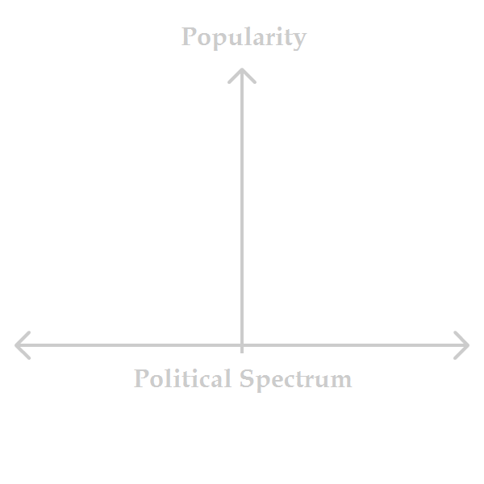
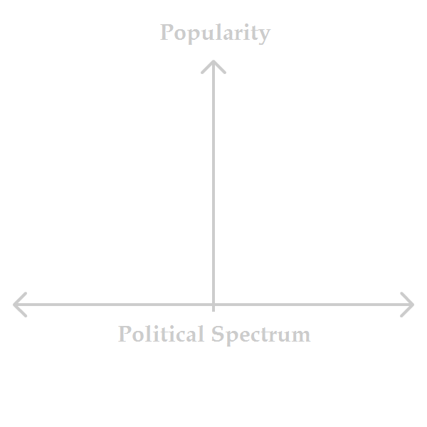

This is just a log I wrote while I was making changes to this voting game.
Minimax
Minimax is a Condorcet method. That means if there's a guy that beats everyone head to head, then that guy wins. That's easy. It's a clear winner. Sometimes there isn't a clear winner. Then you go through some rules. If you're just finding one winner, then the rules are pretty simple. You want to find who lost by the least, basically. So just start crossing off all the smallest losses until there is that guy that has no losses. Try it out below.
Minimax
Ranked pairs is a lot like Minimax. If there's a clear winner that beats everyone head-to-head, then they are the winner. If there isn't a clear winner, then we follow some rules. If you're just interested in the #1 winner and not #2, then the rules are pretty simple. You want to find who won by the most, basically. So start crossing off candidates that lost by a lot. Unless they are the last one left and the guy they lost to already had a bigger loss. Also, you can just stop once you figure out who the winner is. You don't have to go through the whole list. Try it out below.
Ranked Pairs
Putting it all together, here's a sandbox for you to try out all the different systems and to make your own scenarios:
SANDBOX MODE! (link to just this)
From Nicky Case: One hope for Sandbox Mode is that readers can debate with me and each other using this tool! Not just telling me I'm wrong, but showing me I'm wrong. For example – here's a model I made in Sandbox Mode, showing an interesting argument against Approval & Score Voting. Granted, this tool is very limited – it doesn't handle strategic voting or imperfect information – but I think it's a start, and may help improve our Democratic Discourse™